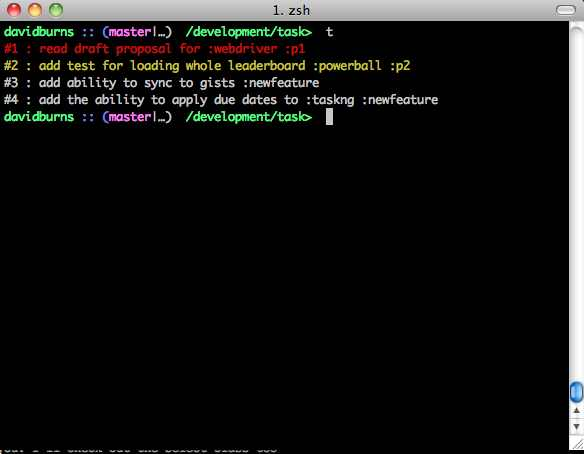

TaskNG is a very simple CLI based Task management tool that allows power users to keep track of what they are doing every day without having to leave their terminal!
usage: node t [options]
note message that you want to store
options:
-p, --pop removes an item from your task list
-e, --edit edits the task in your list
-s, --show show this specific label. To add a label just put : before label. E.g. :foobar
-v, --version writes the version to the screen
Viewing notes is just a simple call to t as seen below.

To add a note it is a simple case of
t Let's add this note!
This will remove items that are currently in your task list
This will allow us to edit notes that are already stored
t -e 1 change to thiswill change the first item to "change to this"
Use this to show only items for a specific label
t -s foobarwill only show items with :foobar label
Show the current version